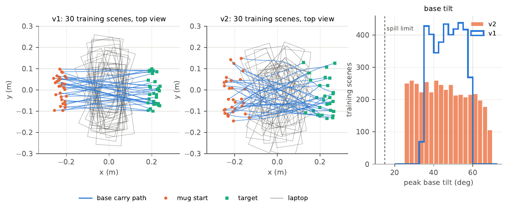
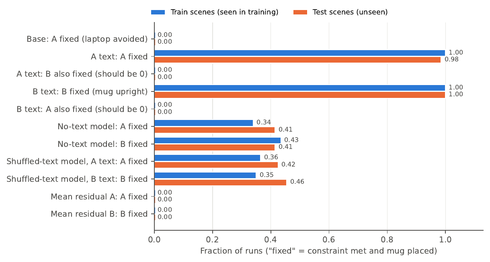
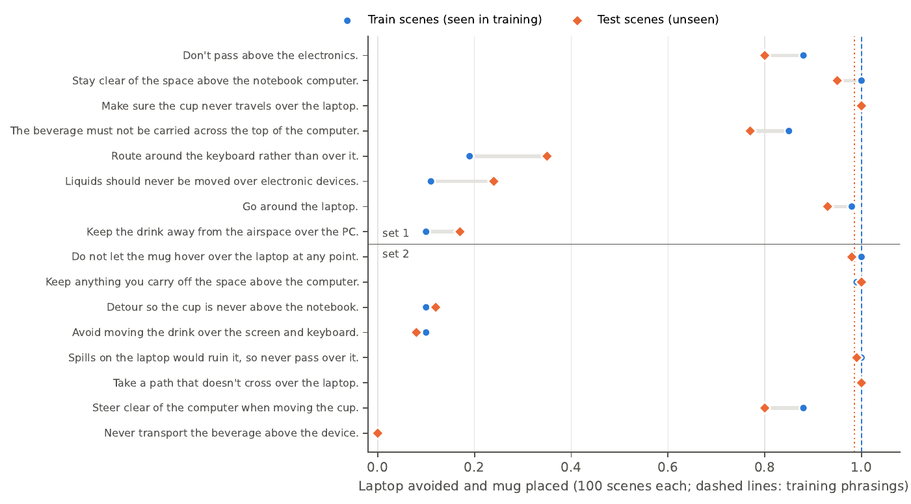
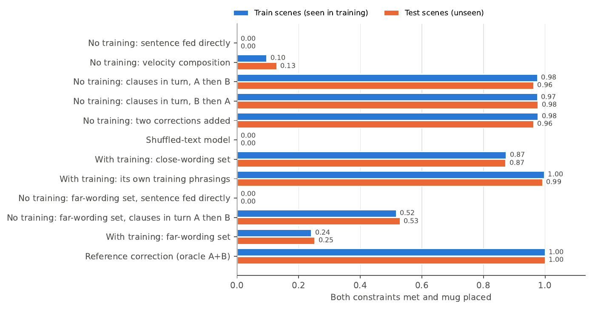
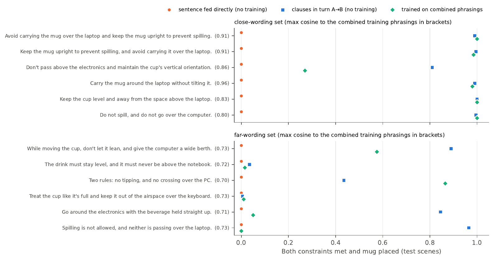
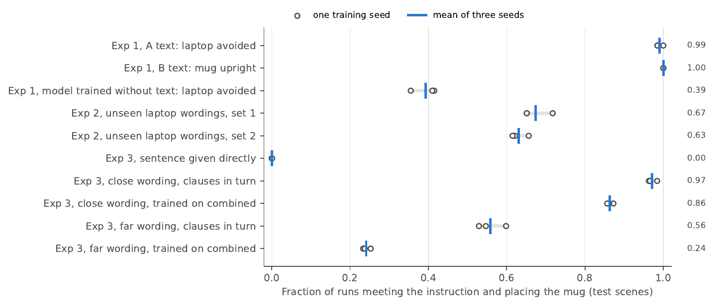
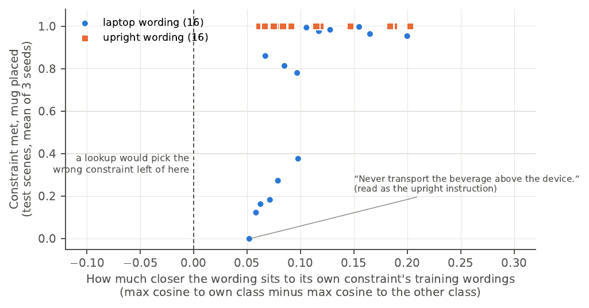
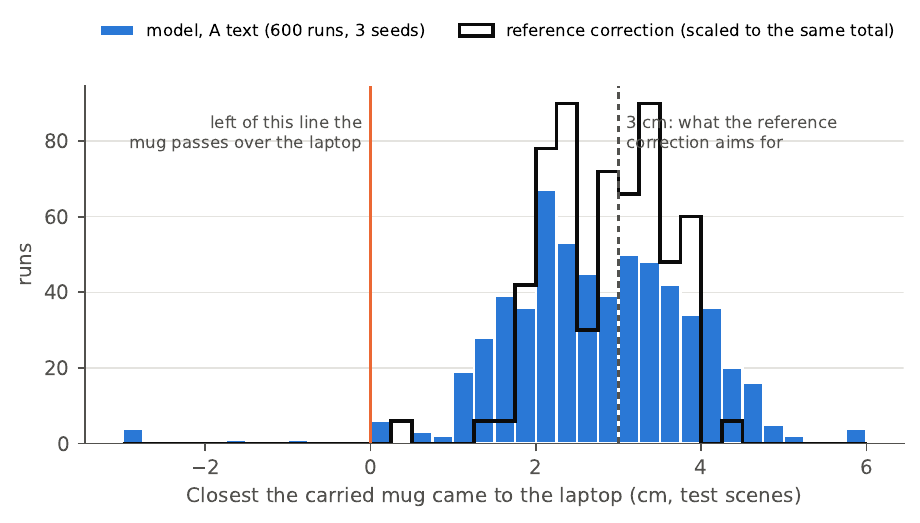

Text-conditioned residual flow, round 2
More varied scenes, train and test scenes, and combined instructions with and without training. This page carries the same text and figures as the PDF, round 2 report (PDF), and the videos of the scored runs are under the Videos tab.
This report follows the first proof of concept (October 13). Same robot, same mug and laptop, same two constraints: A is “Avoid carrying the mug over the laptop” and B is “Keep the mug upright to prevent spilling.” Four things changed:
- The scenes and the base trajectory vary much more.
- Every experiment is scored twice: on 100 scenes the models trained on, and on 100 scenes they never saw.
- The combined instruction is tested both without any combined training and with a model trained on five combined sentences.
- A second set of unseen combined sentences, worded away from those five, checks whether the trained model learned to combine constraints or only learned its five sentences.
The October 31 update repeats the training with two more seeds and reports what three independent reviews found about where the recipe can fail before it is scaled up to OopsieVerse.
Summary
Changing the instruction still changes the correction exactly as intended, and it does so as well on unseen scenes as on training scenes. The wider scene variation did not hurt. Unseen wordings of the upright constraint always work, while unseen wordings of the laptop constraint work about 63% of the time, the same as in round 1.
For the combined instruction, the model trained only on A and B never satisfies both when given the whole sentence (0 of 4,800 runs across both sentence sets and both scene splits). Training on five combined sentences fixes this for sentences worded like them (87%) but mostly not for sentences worded differently (25%). Splitting the sentence by hand into its two clauses and applying the corrections one after the other, with no combined training, does better on the differently worded set (52 to 59%), and its failures come from the same laptop-paraphrase weakness as Experiment 2.
| Measure | Train | Test |
|---|---|---|
| Exp. 1, A text: laptop avoided | 1.00 | 0.985 |
| Exp. 1, B text: mug upright | 1.00 | 1.00 |
| Exp. 1, either text: other constraint left untouched | 1.00 | 1.00 |
| Exp. 1, model trained without text: laptop avoided | 0.34 | 0.415 |
| Exp. 2, unseen laptop wordings (two sets of 8) | 0.64, 0.63 | 0.65, 0.62 |
| Exp. 2, unseen upright wordings (two sets of 8) | 1.00, 1.00 | 1.00, 1.00 |
| Exp. 3, close-wording set, no combined training, sentence given directly | 0.00 | 0.00 |
| Exp. 3, close-wording set, no combined training, clauses applied in turn (A then B) | 0.98 | 0.96 |
| Exp. 3, close-wording set, trained on combined sentences | 0.87 | 0.87 |
| Exp. 3, far-wording set, no combined training, sentence given directly | 0.00 | 0.00 |
| Exp. 3, far-wording set, no combined training, clauses applied in turn (A then B) | 0.52 | 0.53 |
| Exp. 3, far-wording set, trained on combined sentences | 0.24 | 0.25 |
What changed in the setup
More variation in scenes and in the base trajectory
The base trajectory is still a fixed script: given a scene, it always produces the same trajectory. The randomness lives in the scene, which now sets more of what the script does. The table lists every range, and the figure shows 30 training scenes from each round.
| Parameter | v1 | v2 |
|---|---|---|
| Mug start, x / y | −0.26 to −0.20 / ±0.10 | −0.25 to −0.12 / ±0.15 |
| Target (end position), x / y | 0.18 to 0.24 / ±0.10 | 0.12 to 0.27 / ±0.15 |
| Laptop position along the path | 45 to 55% | 38 to 62% |
| Laptop offset across the path | ±0.06 | ±0.08 |
| Laptop angle relative to the path | ±0.25 rad | ±0.5 rad |
| Laptop size | 0.10–0.14 × 0.24–0.32 | 0.09–0.15 × 0.20–0.34 |
| Carry height | 0.25 to 0.33 | 0.26 to 0.36 |
| Base tilt angle (peak) | 34° to 60° | 25° to 70° |
| Tilt start and length (waypoints) | 12–17, 8–11 | 12–18, 6–13 (ends within the carry) |
| Speed profile along the carry (γ) | 0.8 to 1.25 | 0.7 to 1.4 |
| Sideways bend of the carry path | none | ±0.05 |
| Sideways wobble (two smooth terms) | none | ±0.01 each |
| Height wobble (two smooth terms) | none | ±0.01 each |


My first v2 ranges started the mug as close as 0.20 m to the robot's base. A short test run showed that the arm folded badly there: base runs failed to place the mug in about 10% of scenes, and the upright reference still tilted the mug past the limit in 13%. Nearly all of these failures had the mug starting at x < −0.26 (33 of 37 failing scenes), so the v2 mug range now starts at x = −0.25.
The control check now holds by construction
The plan requires that the base trajectory breaks both constraints and that a correct fix exists for each. In v2 I enforce this in simulation. For every candidate scene I ran the base trajectory and the three reference corrections (A only, B only, both), and kept the scene only if the base broke both constraints, each reference fixed exactly its own constraint, the combined reference fixed both, all four placed the mug, and the arm tracked within 12 cm. The training set is the first 4,000 passing scenes out of the first 5,000 drawn, so at least 80% of candidates pass. The filter looks only at the reference corrections, never at a model. As a result, the control table reads 1.00 or 0.00 in every cell on both splits (base: both constraints broken in 100 of 100 scenes; combined reference: both met in 100 of 100).
Train scenes and test scenes
Every number in this report is measured twice: on the first 100 of the 4,000 training scenes, and on 100 test scenes drawn from a separate random stream. The two sets come from the same distribution, so a large gap between them would mean the model memorized its training scenes.
The combined instruction, with and without training
- Without training uses the model trained only on A and B (as in round 1). I test the whole sentence given directly, the two clauses' flows added at sampling time (velocity composition), the clauses applied one after the other in both orders, and the two clause corrections simply added together.
- With training is a new model trained on 30% A, 30% B, 20% empty instructions and 20% combined examples. The combined examples use five new sentences, such as “Hold the mug level and steer it around the laptop,” with the reference correction that fixes both constraints.
Both models are scored on the six combined sentences from round 1, which neither model saw (the close-wording set). A code review pointed out that these are worded close to the five combined training sentences: their closest combined training sentence has an embedding cosine of 0.80 to 0.96. So I wrote six more combined sentences worded differently (the far-wording set, cosine 0.70 to 0.73 to the closest combined training sentence), for example “Two rules: no tipping, and no crossing over the PC.” I wrote the far-wording set before the models in this report were trained.
Unchanged from round 1. The model, the frozen BGE text encoder, the training length (30,000 steps), the five training wordings per constraint, the metrics (laptop violation = mug centre over the laptop while held; spill = tilt above 15°; success = mug within 5 cm of the target, upright, on the table), and the baselines.
Experiment 1: swapping the instruction


Where it works. On both splits. The A text avoids the laptop in 100% of train runs and 98.5% of test runs, and never changes the tilt. The B text keeps the mug upright in 100% of runs on both splits and never changes the path. The empty instruction leaves the base trajectory unchanged. Corrections are the same size on both splits: a 6 cm average detour for A and about 5.5° average rotation for B.
Baselines. The model trained without text and the model trained with shuffled text score 0.34 to 0.46 on each constraint, and the average correction per instruction scores 0. On test scenes, paired by scene, the main model beats the shuffled-text model 59 to 1 for A and 55 to 0 for B (exact McNemar p ≈ 10−16), and every other comparison is at least as lopsided.
Train against test. The only gap is in which side of the laptop the model detours on. On training scenes it picks the same side as the reference correction in 100% of samples; on test scenes, in 91%. Choosing the other side still clears the laptop in almost every case, so the success rate barely moves (1.00 against 0.985).
Training on combined sentences did not hurt. The main_ab model, trained with combined examples, scores the same on single instructions: 0.99 and 1.00 on the test split, with the other constraint left alone in every run.
Experiment 2: unseen wordings


Where it works. All 16 unseen upright wordings score 100% on both splits. Ten of the 16 laptop wordings score between 0.77 and 1.00 on test scenes, including the plan's “Don't pass above the electronics” (0.80).
Where it fails. Six laptop wordings score 0.35 or less on test scenes:
- “Route around the keyboard rather than over it” (0.35)
- “Liquids should never be moved over electronic devices” (0.24)
- “Keep the drink away from the airspace over the PC” (0.17)
- “Detour so the cup is never above the notebook” (0.12)
- “Avoid moving the drink over the screen and keyboard” (0.08)
- “Never transport the beverage above the device” (0.00)
The first five produce a detour that is too small: 2.7 to 3.9 cm on average, against 6.0 cm for the training wordings. The last one is read as an upright instruction: the model rotates the mug (4.0° on average) and barely moves the path (0.4 cm). These are the same failures as in round 1, and the pooled rates are close to round 1's (0.65 and 0.62 now, 0.63 and 0.615 then), so the wider scene variation neither caused nor fixed them. Train and test scores per wording differ by at most 0.16 (“Route around the keyboard”, 0.19 on train scenes and 0.35 on test scenes), and the two largest gaps both favour the test scenes, so there is no sign that the model reads wordings better on scenes it trained on.
Experiment 3: the combined instruction


Without combined training
Where it fails. Given the whole sentence, the model never satisfied both constraints: 0 of 1,200 runs for the close-wording set and 0 of 1,200 for the far-wording set, on each split. Adding the clauses' flows at sampling time reached 0.10 (train) and 0.13 (test), up from 0.03 in round 1 but still low.
Where it works. Applying the clause corrections one after the other met both constraints in 96 to 98% of close-wording runs on both splits, in either order. Adding the two corrections together scored the same on that set (0.96 to 0.98), because A changes only the path and B only the orientation.
The far-wording set separates stacking from adding. On the far-wording set both methods drop to about 0.51 to 0.53, and almost every failure is a laptop violation: its A clauses are new wordings and hit the Experiment 2 weakness. Adding and stacking now differ on the upright constraint. Adding left the mug tilted past the limit in 21% of test runs, against 0.3% for stacking. The difference comes from two sentences whose A clause the model partly reads as an upright instruction (“The drink must never be above the notebook” and “Keep the cup out of the airspace over the keyboard”). There the A pass already rotates the mug a little, and adding a full B correction on top commands 7.5 to 8.1° of rotation where 5.6° is needed, overshooting the limit in 51 to 73% of runs. When stacked, the B pass sees the partly corrected trajectory and commands only what is left, so the total rotation stays at 5.6°.
With combined training
Where it works. On its own five training sentences the trained model meets both constraints in 99% of runs or more on both splits, so the training worked. On the close-wording set it reaches 0.87 on both splits, from 0.00 for the same sentences given directly to the model without combined training. Five of the six close-wording sentences score 0.98 or higher.
Where it fails. On the far-wording set it reaches only 0.24 (train) and 0.25 (test). Clause stacking with the model that never saw a combined sentence beats it on that set: paired on test scenes, stacking wins 212 times and the trained model 47 times. Per sentence the picture is mixed: the trained model wins on “Two rules: no tipping, and no crossing over the PC” (0.865 against 0.435), and loses badly on “Spilling is not allowed, and neither is passing over the laptop” (0.00 against 0.965) and “Go around the electronics with the beverage held straight up” (0.05 against 0.845). Its failures on the far-wording set are mostly laptop violations (58% of runs) with some tilt violations (17%). The one close-wording sentence it fails, “Don't pass above the electronics and maintain the cup's vertical orientation” (0.27), is the one built from Experiment 2's unseen wordings.


Train against test. Every pooled Experiment 3 number is within 0.04 between the two splits.
What we learned
- The large failures in this report come from wording, not scenes. With much wider scenes and a noisier base trajectory, pooled train and test results match within a few points. The only scene effect is small: the detour goes on the reference side in 100% of train samples and 91% of test samples, and the A text in its training wording fails 3 of 200 test runs.
- Training on five combined sentences mostly teaches those five sentences. The trained model goes from 0.00 to 0.87 on sentences worded like them and only to 0.25 on sentences worded differently, which is too few examples to learn what “and” means.
- Composing the single-constraint corrections reaches further than training a combined one, with the caveat that stacking was given clauses split (and lightly cleaned up) by hand while the trained model read the raw sentence. Stacking needs no combined data and is the best method on the far-wording set. Its ceiling is how well the model reads each clause, which is the Experiment 2 problem, so better paraphrase coverage would raise it directly.
- Applying the corrections in turn is safer than adding them when a clause is misread. With clean clauses the two give the same result. When the A clause leaks some rotation, adding over-rotates the mug, while the second pass of stacking corrects only what is left. In this run that does not raise the joint score (0.529 against 0.530 on the far-wording set), because the over-rotated runs come from the two sentences whose laptop clause fails anyway.
- The weak link is turning laptop wordings into a correction. The upright correction can be read off the base trajectory, so any upright wording works. The laptop correction depends on where the laptop is, and wordings far from the five training ones produce a detour that is too small, or none.
Limitations
- Train and test scenes come from the same distribution, so matching numbers show the model did not memorize scenes. They say nothing about scenes outside these ranges.
- Scenes were kept only if the scripted references succeeded in simulation (at least 80% of candidates passed). Scenes where the arm cannot execute a correction are not represented.
- Training-seed variance is now measured (see the update below): across seeds 0, 7 and 42 the standard deviation of every headline number is at most 0.04.
- Confidence intervals on pooled Experiment 3 arms treat every run as independent, although runs share scenes and sentences; they are too narrow. The paired comparisons are lopsided enough that this does not change any conclusion.
- A and B still change separate parts of the action, so adding two clean corrections works by construction. A test where the constraints interact remains the real test of composition.
- Clauses were split by hand for the stacking arms.
- As in round 1, the arm passes through objects, the grasp is a rigid attachment, and a spill means a tilt above 15°.
Next steps
- Many more training wordings per constraint (for example 50, generated by a language model). This targets the failures in Experiments 2 and 3 directly.
- Constraints that interact, so that combining them takes more than two independent fixes.
- An automatic clause splitter in front of stacking.
The update below gives a more detailed, ordered plan for the dummy environment and the path to OopsieVerse.
Update: three seeds and where the recipe can fail
Three training seeds
I trained all four models again with seeds 7 and 42 and scored them on the same 100 train and 100 test scenes as seed 0. The figure shows the test-scene results. The standard deviation across seeds is at most 0.04 for every headline number; the widest gap between two seeds is 0.08 (far-wording clauses applied B then A, 0.58 to 0.66). Every paired comparison points the same way on all three seeds. For example, on the far-wording set, clause stacking beat the model trained on combined sentences on 212, 240 and 248 paired runs and lost on 47, 50 and 35. The conclusions above do not depend on the seed.


Where the recipe can fail
Three agents reviewed the recipe independently: one looked at the method as a learning algorithm, one at what changes in OopsieVerse (they read its paper and code and the GR00T setup cached on the cluster), and one read the experiments the way a conference reviewer would. Their findings overlap, so they are merged here.
Composition is guaranteed in this environment. The reference correction for A+B is exactly the A correction plus the B correction: I checked all 4,100 scenes and the difference is zero. A only moves the path and B only changes the tilt, and the B correction is exactly minus the base tilt, which the model receives as input. So clause stacking and adding the corrections must succeed whenever each clause works, and their 0.97 says nothing about whether the model can compose constraints. The test needs two constraints that change the same part of the action, such as a second obstacle on the side the laptop detour prefers, or “don't crush” against “don't drop” on the gripper.
The text pathway behaves like a three-way switch. Every one of the 32 held-out wordings sits closer to its own constraint's training wordings than to the other constraint's, so a lookup that picks the nearest training wording would choose the right constraint every time. The learned model gets the upright wordings right every time and the laptop wordings only 63 to 67% of the time, and laptop success climbs with how clearly the wording leans toward its class. Feeding the lookup's choice to the existing model should score near the training-wording level of about 0.99. That baseline is a prediction and has not been run.


Corrections sit right at the boundary. The reference detour is the smallest one that keeps 3 cm of clearance, and the model learned to copy it. Pooled over the three seeds (600 test runs), the A corrections keep a median clearance of 2.71 cm, the closest 5% come within 1.18 cm, and 1.0% of runs pass over the laptop. Any shrinkage from noisier perception, a blended instruction or a base that drifts would turn into violations.


Two cases the training never covers. Every training scene breaks both constraints, so safety text always comes with a correction. The model has never seen a scene that is already safe, and will probably correct anyway (predicted). The environment also cannot show a cost to the task: the grasp is rigid and the arm passes through objects, so success stays at 0.96 or higher for every condition.
OopsieVerse is a different setting.
- GR00T, as configured for RoboCasa in the local cache, predicts 16-step chunks, executes 8 and plans again, about 90 times in a 720-step episode. A detour from one chunk can be undone by the next, and errors compound. The dummy corrects one open-loop plan.
- The RoboCasa track scores only mechanical damage, from contact and impact forces, mostly through the gripper. Spill and heat damage exist only in the OmniGibson track, which needs Isaac Sim and does not run on this cluster. Neither of the dummy's two constraints has a counterpart.
- The damage model is not differentiable, so there is no analytic safe trajectory. Training targets would come from best-of-K search with simulator save and restore. A method trained on that search then has to beat running the search directly as a filter.
- GR00T already takes language, so adding the safety sentence to its prompt is a baseline the residual has to beat.
- Collecting search-based training data and paired evaluations would probably exceed the roughly 40 GPU hours left, unless the simulation runs on CPU nodes. This is an estimate.
What to change in the dummy environment first
| Change | Go / no-go check |
|---|---|
| 1. Probes and baselines on the existing models, no retraining: nearest-wording lookup, one-hot class model, parsed constraint plus the scripted reference; already-safe scenes; negated, irrelevant and absent-object instructions. One small GPU job. | If the lookup matches the learned text pathway, treat language as a parsing step in front of the correction model and present the correction mechanism as the contribution. |
| 2. Closed loop: a stochastic scripted base that plans again every 8 of 16 waypoints, the residual applied per chunk, relabelling in the loop, and no correction on chunks that are already safe. | Violations stay low as chunks shrink, without corrections on safe chunks. |
| 3. Force constraints and real composition: finger contact in place of the rigid grasp, OopsieVerse's damage evaluator, “don't crush” and “don't drop” on the gripper, a second obstacle. This rebuilds the grasp and takes days. | Stacking or composition beats the alternatives against a joint reference correction that is not the sum of the singles. |
| 4. Best-of-K search in place of the scripted reference corrections. | Within 10 points of the model trained on the scripted reference. |
| 5. Noisy object poses and attention to object slots in place of global FiLM. | Performance degrades gradually as noise grows. |
Path to OopsieVerse
- The dummy-environment changes above.
- Reproduce GR00T on pick_egg and one multi-object task inside OopsieVerse's damage environments. Go if task completion lands within about 15 points of the paper and completion without damage is above zero.
- Count how often a damage-free alternative chunk exists in logged GR00T episodes. Go if best-of-K rescues at least half of the damaging episodes.
- Train a single-constraint residual on pick_egg with privileged state, against GR00T prompted with the safety sentence and a no-text residual. Go if completion without damage rises while completion does not fall (paired test, p < 0.05).
- Test the language claims on the multi-object tasks, then replace privileged state with images.
Code and data: experiments/residual_flow_poc/. Full tables: runs_v2/results_v2.md (seed 0) and runs_v2/seeds/seeds.md (three seeds). Review write-up: CRITIQUE.md.